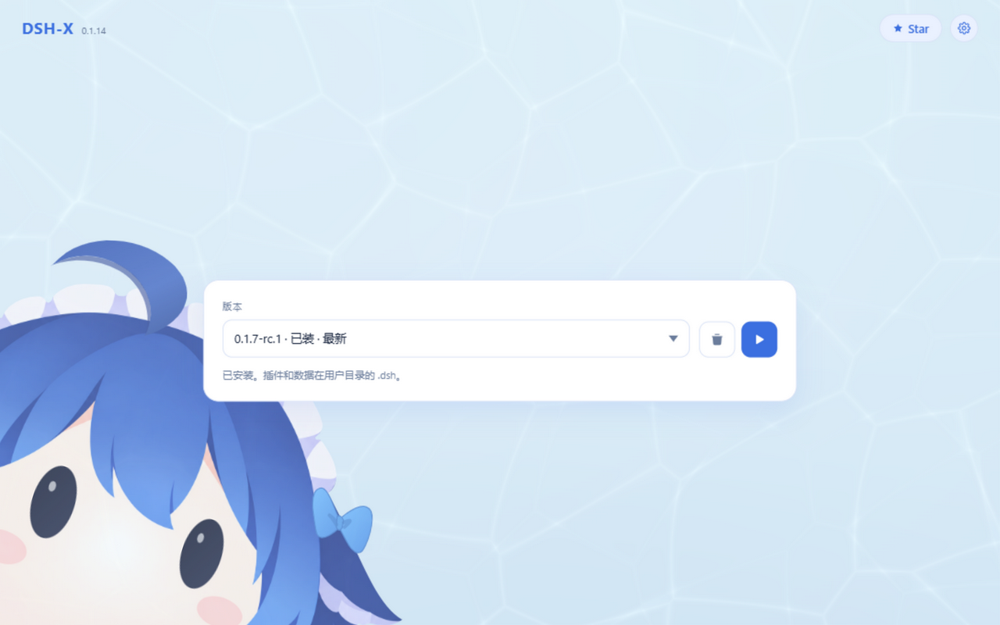

版本，一处管理
安装、启动、更新与切换版本，操作集中在一个界面。
开源 · 轻量 · 即刻启动
选择版本，启动官方原版 DSH Web。安装、更新与插件管理，都在一个地方完成。
macOS 下载为 Apple Silicon 版；Intel Mac 请在发布页选择 x64。
社区开源项目，并非 DeepSeek 官方产品，与 DeepSeek 无隶属或背书关系。

真实桌面端界面预览
安装、启动、更新与切换版本，操作集中在一个界面。
查看已装插件、一键开关与更新；整合包把一批插件和配置一次装进独立 profile。
在系统浏览器里使用官方原版 DSH Web 页面。